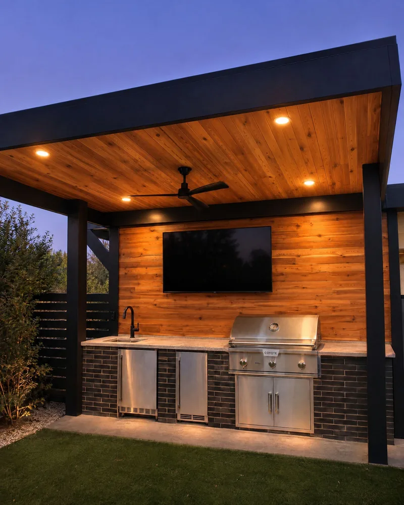
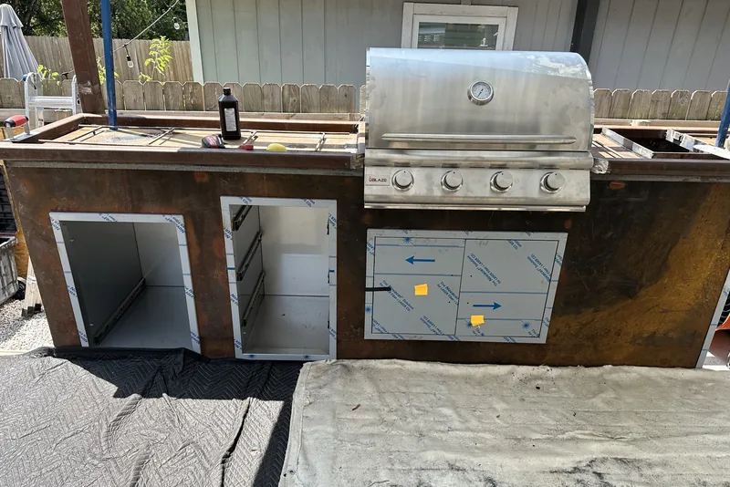
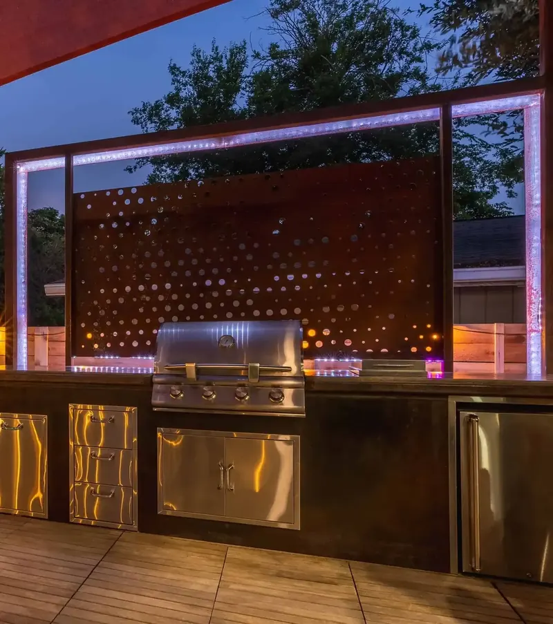

The best outdoor kitchen builders in Austin, TX build the kitchen on site from block, steel, or concrete, design it together with the roof and the patio, put a licensed plumber on the gas line, and show you kitchens they have finished. Compare every builder on those four points first, and then on what they put in writing. Red Agave Landscape is a design-build outdoor kitchen builder in Austin. This post gives eight checks you can run on any builder, with where to verify each one, and compares three kitchens we built.

How Do You Compare Outdoor Kitchen Builders in Austin?
Ask each builder the same eight questions. Half of the answers can be checked without taking anyone’s word for it.
| Check | What to ask | Where to verify |
|---|---|---|
| Built on site | Is the kitchen built here, or delivered as a unit? | Build photos of a past job |
| The base | What is under the finish? | The written scope |
| One plan | Are the kitchen, the roof, and the patio drawn together? | The drawing |
| Gas | Who runs the gas line? | Texas plumbing license search |
| Power | Who wires the outlets, lights, and refrigerators? | TDLR license search |
| Permits | What needs a permit here, and who pulls it? | The city’s permit tool |
| Finished work | Which kitchens have you built, and where? | Photos, references, a visit |
| Paper | What is in the written bid? | The bid and the contract |
What Should an Outdoor Kitchen Be Built From?
Materials that take heat and weather. Red Agave builds outdoor kitchens out of IPE, steel, CMU block, tile, and concrete.
- CMU block: block is the base, and stone or brick goes over it
- Tile: the kitchen is wood-framed and sheathed in concrete board, and the tile goes on the board
- Steel, IPE, and concrete: each is a kitchen material in its own right
Every kitchen is custom-built on site. Ask any builder what is under the finish, and ask for a photo of a kitchen mid-build. A photo of the frame answers the question.


Who Should Run the Gas and the Power?
A licensed plumber and a licensed electrician. Both are state law, and both can be looked up.
Gas. Chapter 1301 of the Texas Occupations Code defines plumbing to include piping that supplies gas, and it requires a license to do plumbing. The Texas State Board of Plumbing Examiners tells consumers to:
- Get the name and license number of the company’s Responsible Master Plumber. A Master Plumber license number begins with the letter M
- Enter that number in the Board’s license search, to confirm the license is valid and that a certificate of insurance is on file
- Ask the city’s plumbing inspection department whether the work needs a permit and an inspection
Power. The Texas Department of Licensing and Regulation says anyone who performs non-exempt electrical work in Texas must be licensed and must do it through a licensed electrical contractor. Its license search is public.
On our kitchens, licensed plumbers run the dedicated gas line from the meter to the kitchen, under permit.
What Needs a Permit in Austin?
Less of the kitchen than you would think, and more of what feeds it. Austin Development Services lists the work exempt from building permits. For a home, the list includes:
- Cabinets, countertops, and similar finish work
- Concrete flatwork that is not in the public right-of-way
- A one-story detached accessory structure of no more than 200 square feet and 15 feet tall, with no plumbing, outside a flood hazard area
- Electrical wiring and equipment that runs at less than 25 volts and no more than 50 watts
Exempt work still has to meet the building code. The plumbing items on the list are repairs, such as stopping a leak or replacing a faucet. A new gas line and new household-voltage circuits are not on it. A roof attached to the house is not a detached structure.
The city’s Do I Need a Permit tool takes about five minutes. We handle permitting with the City of Austin on our kitchens.
Which Kitchens Has the Builder Finished?
Ask for the list, with places. The Texas Attorney General’s guide on home improvement contracts says to seek references, and to ask satisfied customers whether you can see the finished work.
Here are three of ours, side by side.
| Kitchen | West Lake Hills | East Austin, covered patio | East Austin, pool yard |
|---|---|---|---|
| Layout | A straight run under its own roof | An L along two walls | A straight run in front of a steel screen |
| Base | Dark brick | Dark blue stucco | Steel-faced |
| Countertop | Stone | Granite | Formed in place, with rebar |
| Overhead | Flat roof on black posts, wood ceiling | The roof of the covered patio | A red sail shade |
| Built in | Grill, sink, two refrigerators | Grill, drawers, doors, beverage refrigerator | Grill, under-counter refrigerator |
| Around it | Four recessed lights, a ceiling fan, a TV | Outlets along the back wall, herringbone tile floor | A teak deck, a pool, a backlit Corten steel screen |

Each one was drawn by the owner and built by our own crew. See why we build kitchens under a roof, the East Austin pool project, and more of our work in West Lake Hills.
What Should the Bid Say?
Enough that two bids can be compared line by line. The Attorney General’s guide says to:
- Get bids from more than one builder, in writing, with detail on exactly what will be done
- Have the bid name the kinds of materials, down to grade or thickness
- Be wary of a bid far below the others, and ask what materials and work it leaves out
- Choose a contractor with an established physical address
- Insist on a contract that says what will be done, when the work starts, and when it will be finished
- Hold the final payment until the work is complete and you have inspected it
At Red Agave you approve the materials and every detail in writing, with an itemized quote, before construction starts. Every project starts with a free consultation, and the CAD plan is included. See our outdoor kitchens service. For pricing, see our outdoor kitchen cost guide.
What Sources Did We Use?
We read each of these in November 2026.
- Texas State Board of Plumbing Examiners, Consumer Information
- Texas Occupations Code, Chapter 1301, Plumbing License Law, Sections 1301.002 and 1301.351
- Texas Department of Licensing and Regulation, Electricians
- City of Austin, Austin Development Services, Work Exempt from Building Permits and Do I Need a Permit
- Office of the Attorney General of Texas, How to Avoid Home Improvement Scams
Questions We Hear
How do I compare outdoor kitchen builders in Austin?
Ask each one the same eight questions: whether the kitchen is built on site, what the base is made of, whether the kitchen, roof, and patio are on one plan, who runs the gas, who does the electrical work, what needs a permit, which kitchens they have finished, and what is in the written bid.
Does an outdoor kitchen gas line need a licensed plumber in Texas?
Yes. Chapter 1301 of the Texas Occupations Code defines plumbing to include piping that supplies gas, and it requires a license to do plumbing. The Texas State Board of Plumbing Examiners has a public license search.
Does an outdoor kitchen need a permit in Austin?
Austin Development Services lists countertops, cabinets, and concrete flatwork as exempt from a building permit, along with a detached accessory structure of no more than 200 square feet. A new gas line and new household-voltage circuits are not on the exempt list.
What does Red Agave build outdoor kitchens from?
IPE, steel, concrete, CMU block with stone or brick over it, and tile on a wood frame sheathed in concrete board. Every kitchen is custom-built on site.
Which outdoor kitchens has Red Agave built in Austin?
A covered kitchen under its own roof in West Lake Hills, an L-shaped kitchen on a covered patio in East Austin, and a grill station in front of a backlit Corten steel screen on a pool project in East Austin.